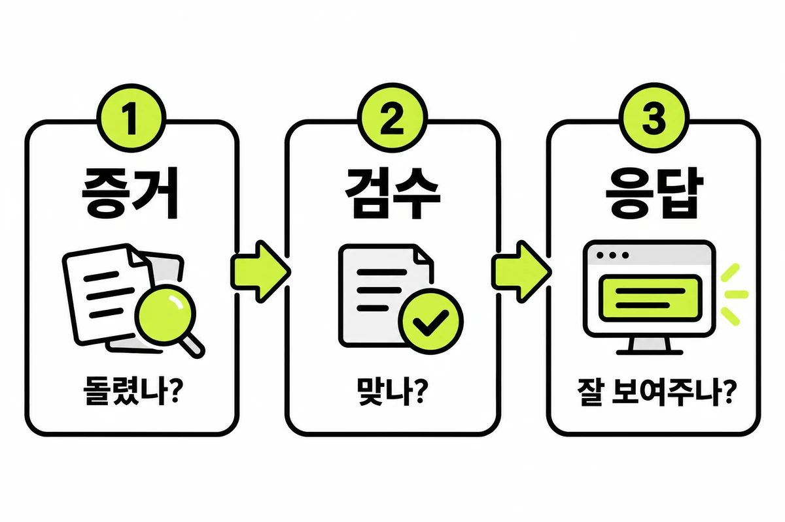
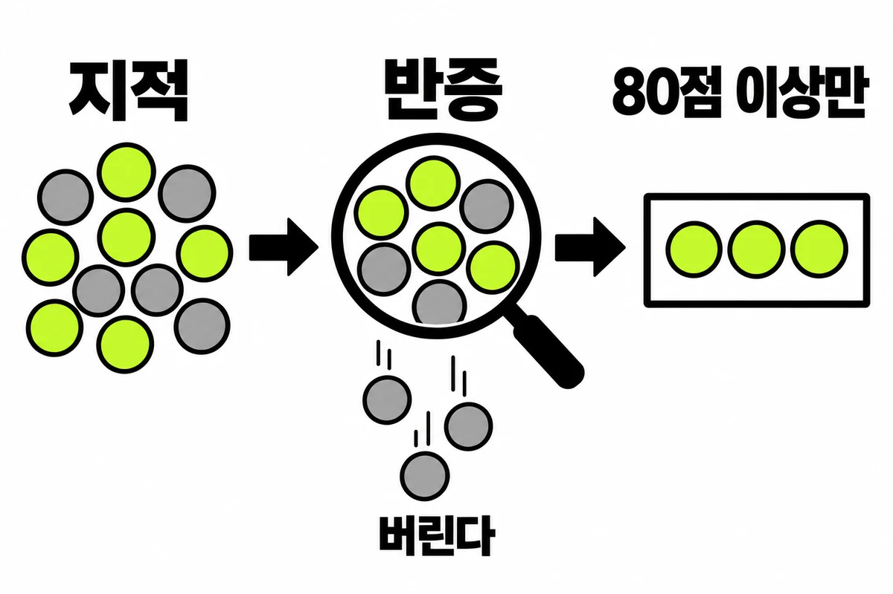

스킬이 겹치면 매번 다른 게 걸려서 서열을 정했어요
AI 에게 일을 시키는 규칙을 스킬(skill) 문서로 하나씩 만들다 보니, 어느 순간 「다 됐어요」 한 번에 스킬 서너 개가 동시에 걸렸어요. 겹치는 스킬은 있으나 마나가 아니라 믿을 수 없는 상태가 됐고, 그래서 서열을 정했어요. 그 과정과 검수 스킬 하나가 실제로 어떻게 생겼는지 적어 둬요.
By heysep7 min read스킬 검수
스킬이 겹치면 매번 다른 게 걸려요#
스킬은 설명 문장을 보고 모델이 골라 써요. 「완료」라는 순간에 걸리는 스킬이 증거 규칙, 코드 검수, 응답 점검 세 개였는데, 셋 다 비슷한 말(「다 됐다」)에 반응했어요. 그러면 어떤 날은 증거 규칙만, 어떤 날은 검수만 돌아요. 같은 상황에서 결과가 매번 달라지면 어느 쪽도 믿을 수 없어요.
해결은 스킬을 더 잘 쓰는 게 아니라 역할을 갈라서 순서를 정하는 것이었어요. 세 스킬에 각각 한 가지 질문만 맡겼어요.

| 순서 | 질문 | 성격 |
|---|---|---|
| 1. 증거 규칙 | 검증 명령을 이번에 돌렸나 | 판단이 아니라 사실 확인이에요. 훅이 기계적으로 같은 걸 잡아요 |
| 2. 코드 검수 | 결함이 있나 | 찾고, 오탐을 걸러 내고, 심각도 순으로 보고해요 |
| 3. 응답 점검 | 보여주는 방식이 사용자를 화나게 하나 | 코드가 맞는지가 아니라 응답을 봐요 |
세 개를 하나로 합치지 않았어요. 합치면 문서가 길어져서 모델이 앞부분만 읽고, 어느 단계에서 실패했는지도 흐려져요. 이 서열은 스킬 설명이 아니라 전역 지침 파일에 적었어요. 플러그인으로 받은 스킬은 업데이트되면 설명이 원래대로 돌아가기 때문이에요.
UI 작업이나 영상 작업도 같은 방식으로 정리했어요#
화면 만들기에는 검색용 DB, 구현, 차트 같은 도구 스킬이 여럿 있어요. 그래서 진입점 스킬 하나를 두고, 나머지는 그 안에서 단계별로 불러 쓰는 도구로 정했어요. 사용자가 부르는 스킬은 하나고, 나머지는 그 스킬이 부를 때만 써요. 스킬을 새로 만들기 전에는 이미 같은 일을 하는 스킬이 있는지 먼저 보는 규칙도 넣었어요. 읽지 않고 만든 스킬은 기존 스킬과 겹치면서 어느 쪽이 걸릴지 흔들렸기 때문이에요.
검수 스킬 하나를 뜯어 보면#
검수 스킬은 「볼 것 목록」이 아니라 실패 모드 두 가지만 막아요. 증거 없이 통과시키는 것, 오탐으로 사람 시간을 태우는 것이에요. 철칙도 두 줄이에요.
1. 실행하지 않은 명령의 결과는 주장할 수 없다.
2. 확신도 80점 미만의 지적은 보고하지 않는다.절차에서 효과가 컸다고 느낀 부분은 이래요. 다만 수치로 비교하지는 못했어요.

- 지적마다 반증을 먼저 시도해요. 「이건 오탐이다」를 증명해 보고 실패할 때만 살려요. 그리고 0~100점을 매겨 80 미만은 버려요. 버린 개수만 한 줄로 적어요.
- 지적에는 실패 시나리오가 있어야 해요. 「에러 처리 개선 필요」는 시나리오가 아니에요. 어떤 입력에서 어떤 잘못된 출력이 나오는지까지 써야 해요.
- 못 돌린 검사는 통과가 아니라 「판정 불가」예요. 보고 끝에 「돌린 렌즈 / 전체 렌즈 / 판정 불가」 세 숫자를 적고, 판정 불가가 하나라도 있으면 「출시해도 됨」을 쓰지 않아요.
- 같은 지적이 세 번 나오면 패치를 멈춰요. 네 번째 패치 대신 설계를 바꾸거나, 한계로 인정하거나, 그 기능을 없애요.
- 마지막 렌즈는 다른 모델이에요. 같은 모델이 보면 같은 맹점을 공유한다고 보고, 되돌리기 어려운 변경은 다른 모델의 검토 통과를 완료 조건에 넣었어요.
이 중 몇 가지(다중 렌즈, 80점 컷, 증거 우선)는 공개된 검수 플러그인과 다른 사람의 글에서 가져왔어요. 거기 적힌 사례 수치는 제가 다시 재현하지 않았기 때문에 이 글에는 옮기지 않았어요.
문서로 쓴 규칙은 한계가 있어요#
응답 점검 스킬은 사용자에게 실제로 지적받은 것만 목록에 넣어요. 새로 지적받으면 목록이 늘고, 목록이 길어지면 아무도 안 보니까 죽은 항목은 지워요. 그리고 이 규칙 전부가 읽고 지키는 규칙이라는 한계를 스킬 문서에 직접 적어 뒀어요. 무시해도 아무 일도 안 일어나요. 같은 항목을 두 번 어겼다면 문서를 더 쓸 일이 아니라 훅으로 옮길 일이라고요.
게이트가 죽었는지 확인하는 방법도 적어 뒀어요. 최근 열 턴 동안 이 게이트가 실제로 무언가를 멈춰 세운 적이 없다면, 잘 지키고 있는 것이거나 죽은 것이에요. 둘을 가르려면 일부러 걸릴 초안(「대부분 통과했습니다」)을 넣어 보고 경고가 실제로 켜지는지 봐요. 이 점검을 정기적으로 돌리고 있다고는 말하지 못해요.
배운 것#
- 스킬은 개수가 아니라 겹침이 문제예요. 같은 순간에 걸리는 스킬은 질문을 하나씩 나눠 맡기고 순서를 정해요.
- 서열은 스킬 설명이 아니라 업데이트에 덮이지 않는 곳에 적어요.
- 검수는 목록이 아니라 필터예요. 오탐을 버리는 규칙과 못 본 것을 못 봤다고 적는 규칙이 같이 있어야 보고를 믿을 수 있어요.
- 문서 규칙을 두 번 어기면 훅으로 옮겨요.